AI와 함께 3일 만에 만든 프로토타입
Chicken Fire
화염방사기를 멘 닭이 시간과 싸우는 타임어택 슈팅
- 1인 개발 · 3D 쿼터뷰
- 웹에서 바로 플레이
- 2026. 10. 9 ~ 10. 11
방향키나 마우스 휠로 넘겨 보세요 →
1. 게임 · 한눈에
닭을 태워 시간을 버는 타임어택
-
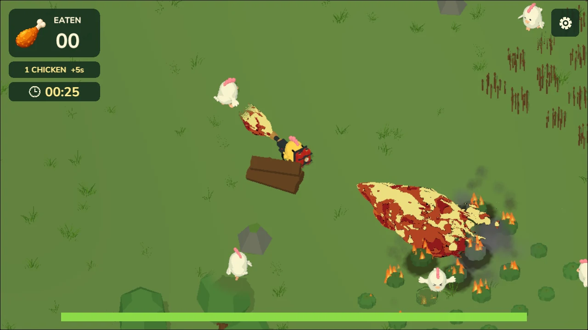
1 태우기화염방사기로 흰 닭을 지지기
-
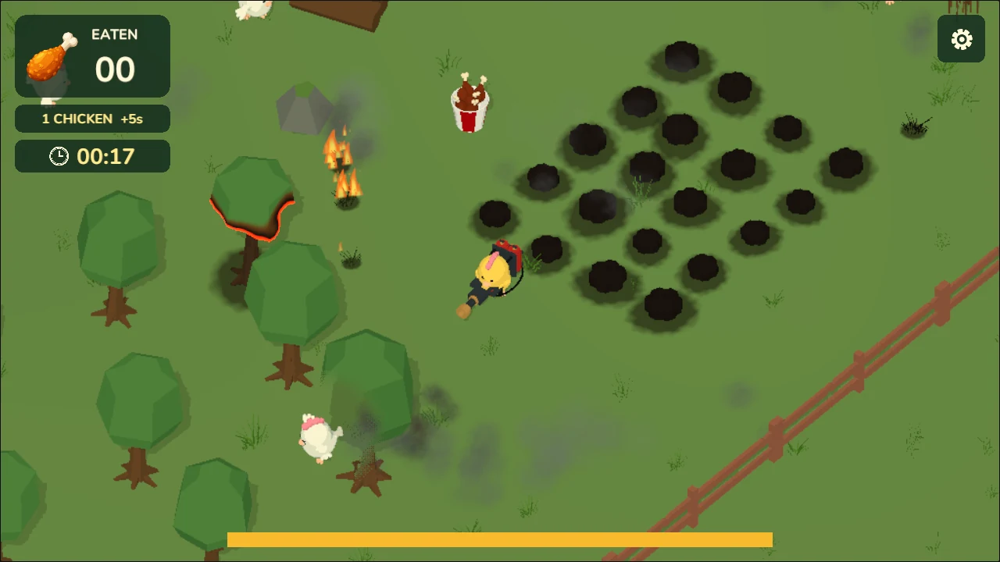
2 치킨통쓰러진 닭이 치킨통으로 바뀜
-
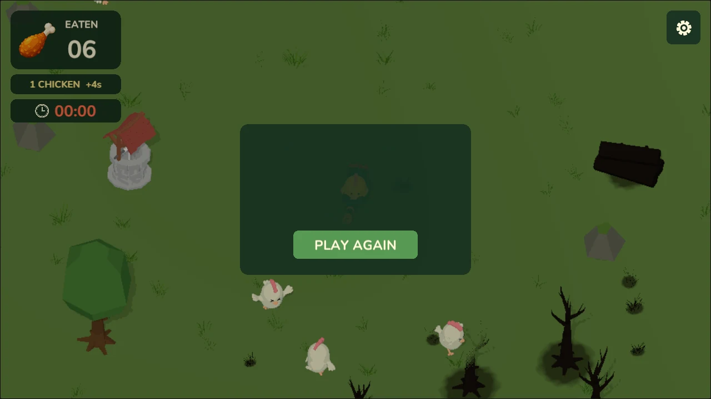
3 시간 벌기치킨통을 먹으면 +5초. 시간이 0이 되면 끝
1. 게임 · 3일의 흐름
불 효과 실험에서 타임어택 게임까지
- 출발연습 프로젝트에서 공부한 카툰풍 불 효과를 게임으로
- 첫 방향작은 농장 마당, 쿼터뷰, 눈에 잘 띄는 닭과 불꽃
- 시제품끝없이 이어지는 농장
- 방향 전환40 × 40 m 아레나와 30초 생존 라운드
1. 게임 · 돌아가는 구조
한 판마다 반복되는 플레이 흐름
- 시작남은 시간 30초
-
- 태우기화염이 닿으면 닭이 놀라 도망. 1.4초쯤 맞히면 쓰러짐
- 먹기치킨통에 다가가면 저절로 먹고 시간 +5초
- 압박30초마다 보상 1초씩 감소, 닭은 6마리에서 12마리까지
- 끝시간이 0이 되면 종료. 점수는 먹은 치킨통 수
1. 게임 · 플레이어가 느끼는 것
맞은 닭이 온몸으로 반응하게
- 눈이 > < 로"뜨겁고 당황한 느낌"을 표정으로
- 놀라고, 도망치고, 진정0.2초 놀람 → 2배 속도로 도주 → 2초 뒤 진정
- 아픈 느낌 대신 우스꽝스럽게빨간 번쩍임, 꼬꼬댁 소리, 만화 같은 몸짓
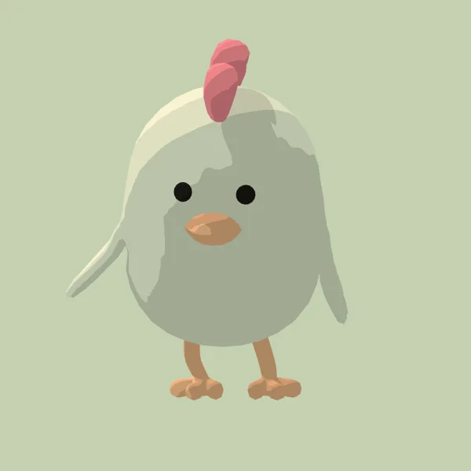
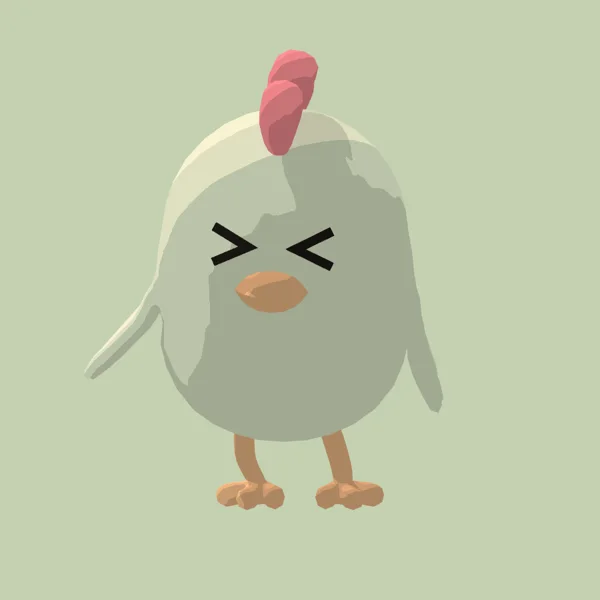
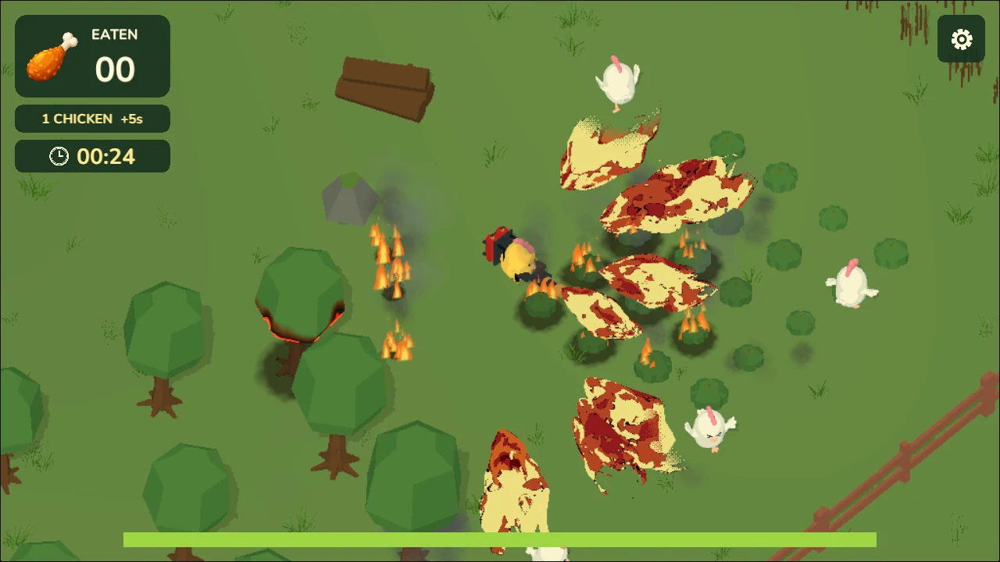
1. 게임 · 플레이어가 느끼는 것
불이 번지는 아레나
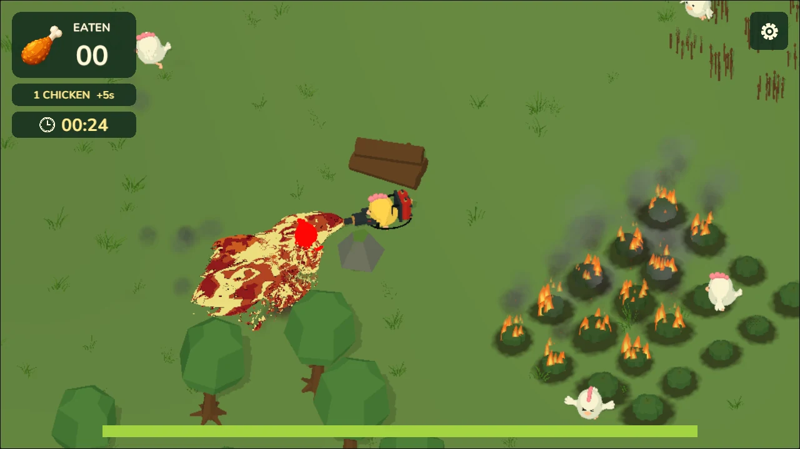
0.4초 닿으면 불붙음6초 동안 타며 2.4 m 안으로 번짐
타는 것 122개, 안 타는 것 12개건물과 바위는 길잡이와 엄폐물로 남김
-
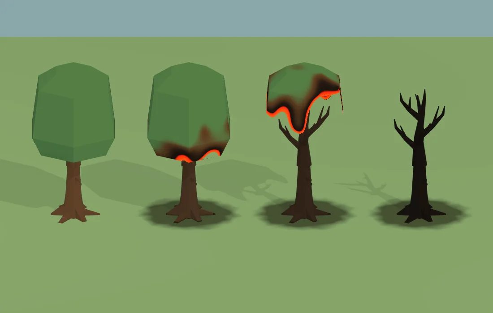
단계별로 타는 나무잎이 타 없어지고 검은 가지만 남음
-
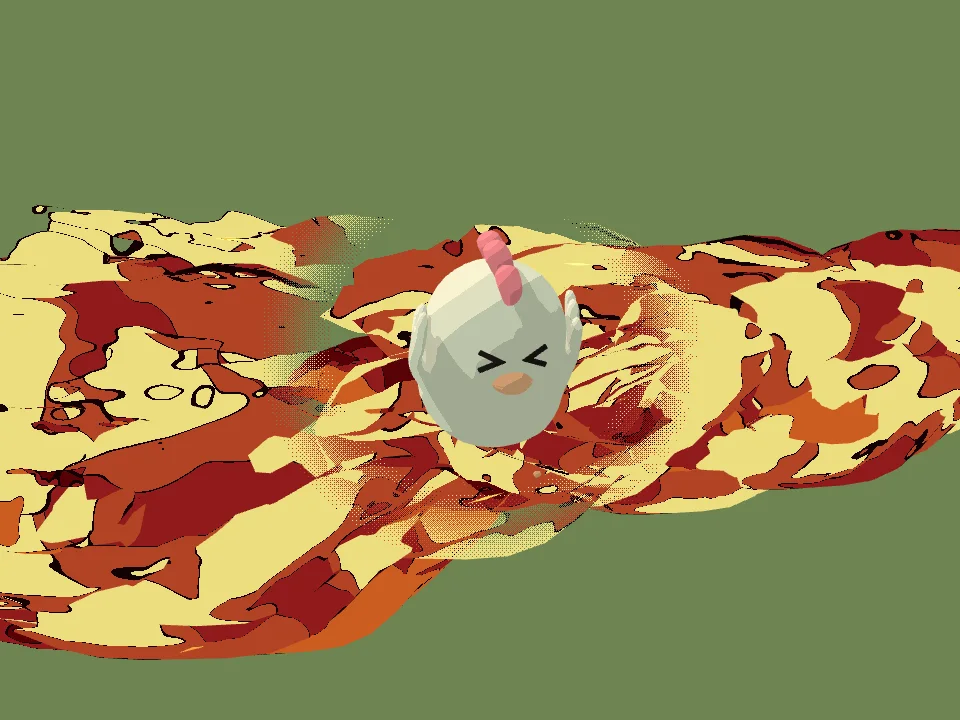
가려져도 보이게불이나 건물 뒤의 닭은 둥근 창으로 비쳐 보임
1. 게임 · 고민한 지점
위협은 닭이 아니라 시간
- 닭은 공격하지 않고, 플레이어 체력도 없음
- 잡기는 계속 쉽게 두고 치킨통 하나의 값을 줄임
- +5초닭 6마리
- +4초닭 8마리
- +3초닭 10마리
- +2초닭 12마리
- +1초닭 12마리
버티려면 점점 더 많이 먹어야 하고, 결국 시계가 이김
2. AI와 만든 과정 AI 리더십
그림으로 먼저 확인하고, 승인한 것만 만들기
- 참고 그림
(AI 이미지) - 내 확인
- Blender 모델과 동작
- Unity 적용
- 실제 쿼터뷰 화면에서 비교
-
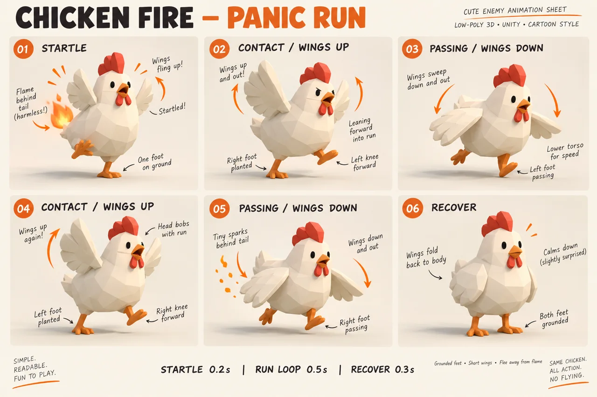
닭 놀람 동작 포즈 시트 승인 뒤 제작. 검사 9개 통과 -
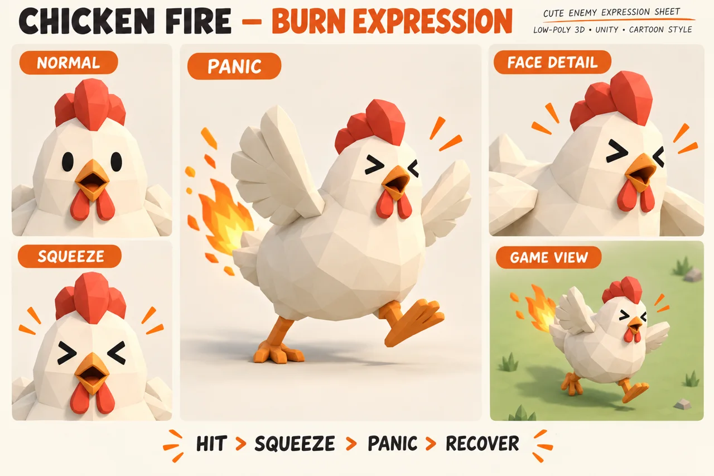
< 눈, 놀란 눈, 게임 화면" width="1280" height="853"> 화상 표정 참고 그림 확인 뒤 적용. 검사 11개 통과 -
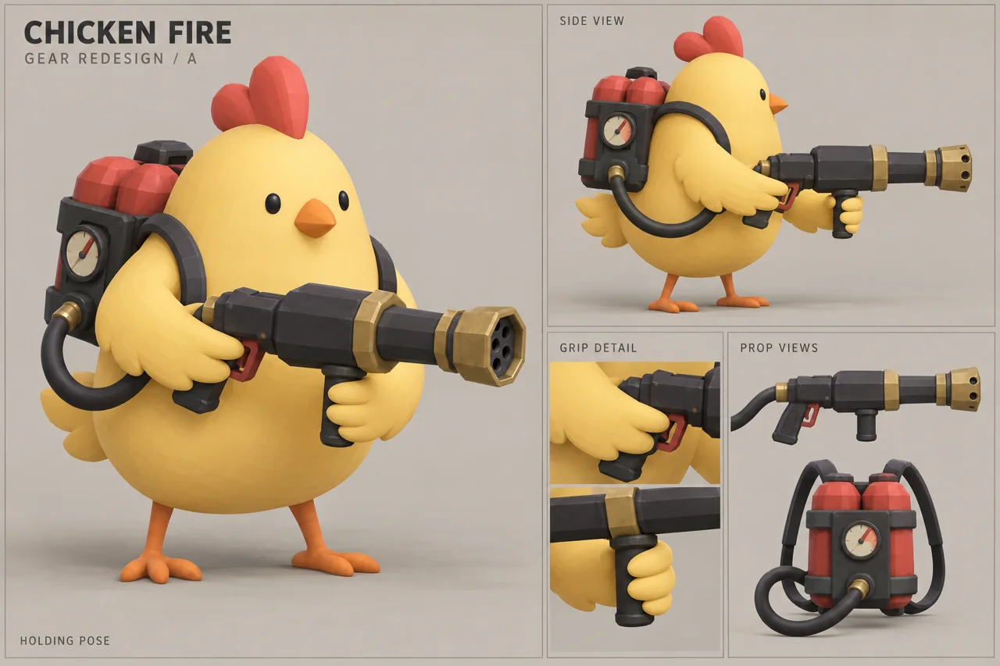
화염방사기 재디자인 그림 확인 뒤 모델 수정
참고 그림은 느낌을 정하는 용도. 실제 모델과 게임 화면에서 다시 확인
2. AI와 만든 과정 구조화 능력
기능 하나를 단계와 완료 기준으로 쪼개기
예: 불에 맞은 닭의 눈 표정
→ < 눈으로 바뀐 닭 얼굴" width="600" height="600">만드는 순서
- 원래 눈을 따로 떼어 낼 수 있는지 확인
- 같은 자리에 > < 눈 만들기
- 얼굴에 붙이고 깜빡임 없게 띄우기
- 평소 눈과 > < 눈을 바꾸는 장치
- 놀람·도주·회복 흐름에 연결
- 실제 쿼터뷰에서 선 두께와 크기 조정
완료 기준
- 평소 눈과 > < 눈이 겹치지 않음
- 머리가 돌아도 얼굴을 따라 움직임
- 연속으로 맞아도 깜빡이지 않음
- 회복하면 원래 눈, 다시 나올 때 표정이 남지 않음
- 여러 마리가 맞아도 각자 따로 반응
- 실제 플레이 크기에서 표정이 읽힘
검사 11개 통과. 같은 방식으로 남긴 결과 기록 12개, 통과한 검사 100개 이상
2. AI와 만든 과정 학습 실행력
카툰풍 불 효과와 셰이더를 먼저 공부하고, 게임에 적용
연습 프로젝트 2026. 10. 6 ~ 7
- 툰 셰이딩과 외곽선
- 불꽃 플립북과 일렁이는 빛
- 타들어 가며 사라지는 디졸브
- 열기 왜곡(아지랑이)
-
화염방사기 VFX색을 단계로 끊은 카툰풍 불길
-
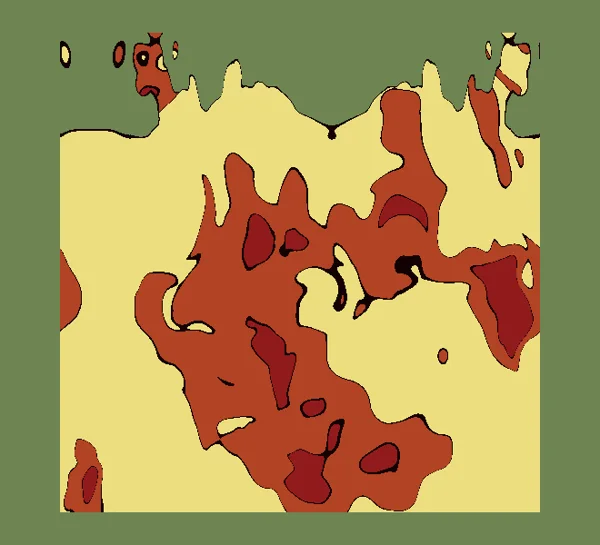
→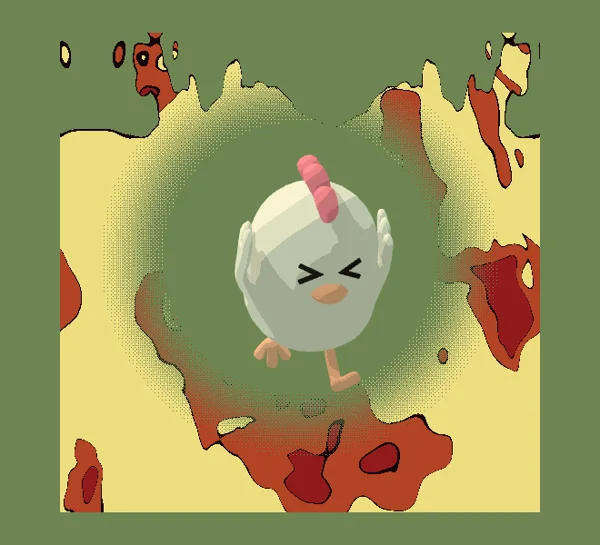
가려진 닭 보이게불이나 나무 뒤의 닭을 둥근 창으로 비쳐 보이게
2. AI와 만든 과정 학습 실행력
만들다 막힌 문제도 AI로 배워 바로 적용
| 풀어야 했던 문제 | AI로 배운 것 | 게임에 적용 |
|---|---|---|
| 풀밭 전체를 바람에 흔들기 | 정점 셰이더에서 흔들고 뿌리는 고정 | 그림자와 외곽선까지 함께 흔들리는 풀 |
| 달리는 닭이 나는 것처럼 보임 | 동작 재생 속도를 실제 이동 속도에 맞추기 | 걷기 동작으로 바꾸고 발을 땅에 붙임 |
| 닭 무리가 한 길로 몰림 | 서로 밀어내는 분리 조향, 미리 만들어 두고 다시 쓰는 풀링 | 흩어져 도망치는 닭 12마리 |
3. 결과 · 만든 것
3일 동안 만든 것
- 3일제작 기간2026. 10. 9 ~ 10. 11
- 55개C# 스크립트3,549줄
- 134개아레나 소품그중 122개가 불에 탐
- 100개 이상통과한 자동 검사결과 기록 12개
3. 결과 · 정리
한 장 정리
- AI 리더십
그림으로 먼저 확인하고, 승인한 것만 제작
- 구조화 능력
기능마다 단계와 완료 기준을 적고 검사로 확인
- 학습 실행력
불 효과와 셰이더를 먼저 공부하고 게임에 바로 적용
3일 만에 웹에서 바로 플레이하는 타임어택 슈팅 완성